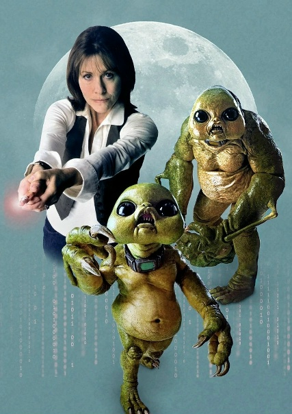

The Lost Boy
Дата выхода: 12-19 ноября 2007
Формат: 2 эпизода по 30 мин.
| Варианты озвучек: | * Разные: смотрите по инструкции |
|---|---|
| Скачивание и просмотр: |
Фотография Люка оказывается в новостях, так как его «настоящая семья» заявляет о пропаже их любимого сына. Приключения команды Сары Джейн могут подойти к концу, так как она вынуждена передать Люка его «родителям», а отец Марии угрожает продать дом, чтобы спасти дочь от инопланетных напастей. Тем временем Люк узнаёт кем на самом деле являются его «родители» - старые враги вернулись, и на этот раз у них есть мощный союзник среди друзей Сары Джейн. Если всё пойдёт по плану, Луна должна упасть на Землю!
